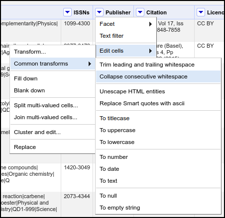

Content from Introduction
Last updated on 2025-06-05 | Edit this page
Overview
Questions
- What are virtual machines and containers?
- How are they used in open science?
Objectives
- Explain the main components of a virtual machine and a container and list the major differences between them
- Explain at a conceptual level how these tools can be used in research workflows to enable open and reproducible research
Introduction
You might have heard of containers and virtual machines in various contexts. For example, you might have heard of ‘containerizing’ an application, running an application in ‘Docker’, ‘spinning up’ a virtual machine in order to run a certain program.
This lesson is intended to provide a hands-on primer to both virtual machines and containers. We will begin with a conceptual overview. We will follow it by hands-on explorations of two tools: VirtualBox and Docker.
If you forget what a particular term means, refer to the Glossary.
Prerequisite
This lesson assumes no prior experience with containers or virtual machines. However, it does assume basic knowledge about computer and networking concepts. These include
- Ability to install software (and obtaining elevated/administrative rights to do so),
- Basic knowledge of the components of a computer and what they do (CPU, network, storage)
- Knowledge of how to navigate your computer’s directory structure (either graphically or via the command line).
Prior exposure to using command line tools is useful but not required.
What are virtual machines and what do they do?
Normally, computers run a single operating system with a single set of applications. Sometimes (for reasons we’ll discuss soon), people might want to run a totally separate operating system with a different set of applications. One way to do that is to split up the physical resources like CPU, RAM, etc. and present them to that second operating system for its exclusive use. The concept of splitting up these resources (i.e., virtualizing them) so that only this second operating system can access them is the idea behind a virtual machine.
At its core, a virtual machine (referred to as VM from now on) is a self-contained set of operating system, applications, and any other needed files that run on a host machine. The VM files are usually encapsulated inside of a inside single file called a VM image. The file you downloaded during the lesson setup is an example of an image.
Callout
One way to think of the VM concept is a computer that runs inside your computer. All the programs that run inside this mini computer can’t “see” anything running outside of it, either in the host or other VMs running on the same physical computer.
Why would we want to run a mini computer inside of our main computer? VMs are commonly used to
- More easily manage and deploy complex applications.
- Run multiple operating systems and their applications on the same physical hardware.
Examples:
- Your bank’s internal systems need to be robust against risks like hardware failure, hacking, weather events, etc. One way to achieve this is to run several identical servers spread out geographically. While one could install all the software on each server, using a VM reduces complexity by allowing the same software and associated configurations to be quickly deployed and managed across varying hardware.
- Many cloud computing providers like Amazon allow users to purchase resources on their systems. To maximize their investment on physical hardware, these companies will set up a virtual server for each customer. Functionally, these virtual servers behave as a standalone machine but in reality, there may be dozens of other virtual servers running on the same physical system.
VMs are also commonly used in academic research scenarios as well as they can help with the problem of research reproducibility by packaging all data and code together so that others can easily re-run the same analysis while avoiding the issue of having to install and configure the environment in the same way as the original researcher. They also help optimize the usage of the computing resources owned by the institution. You might have interacted with VMs at your institution if you’ve ever logged into a “remote desktop” or “virtual computing environment” that many institutions use to provide access to licensed software. Some Carpentries workshops also use VMs as part of their curriculum.
Callout
Benefits of VMs
- Help with distributing and managing applications by including all needed dependencies and configurations.
- Increase security by isolating applications from each other.
- Maximize the use of physical hardware resources by running multiple isolated operating systems at the same time.
What are containers and what do they do?

Containers are conceptually similar to VMs in that they also encapsulate applications and their dependencies into packages that can be easily distributed and run on different physical machines. A notable difference is that when using containers, hardware is not virtualized and containerized applications must be compatible with the host OS and its hardware. In more technical terms, applications running in a container share the host’s kernel and therefore must be compatible with the host’s architecture. In practical terms, this means that containers:
- Are generally less resource-intensive than comparable VMs, at the cost of portability.
- Are generally not able to run applications written for one operating system on another.
Two core concepts
Ephemerality
Containers should be considered ephemeral so that they can be destroyed and recreated at any time such that the application within simply resumes as if nothing had happened. Therefore, containerzied applications must be designed in such a way that allows the container manager to save all user data and configurations outside of the container. This separation is what enables some of the use cases below.
Modularization A popular paradigm is modularizing a complex application into smaller, loosely connected components called “microservices”. Each microservice runs in its own container and communicates with other microservices via an isolated, private network that is set up by the container management platform. This approach helps with maintenance, scalability, and robustness since a microservice can be stopped, updated, and/or swapped without affecting the other microservices.
Examples
- Web applications. E.g., a web front-end container that talks to a database backend running in a different container. In this case, the ephemerality and microservice concepts allow for easily updating the software, while being sure that the data won’t be affected. For example, the database can be updated or replaced without needing to touch the front-end software at all (thereby allowing error or maintenance messages to function).
- Data science, data management, and other research uses. In these applications, the benefits of ephemerality and modularization via microservices are realized to enable reuseable, reproducible, and cloud-native workflows. Due to their lighter weight and the ability to define and create containers via plain-text blueprints (e.g., Dockerfiles – more on that later), containers have become more popular than virtual machines in research environments.
Callout
Benefits of containers
- A lighter footprint (mainly around lower CPU and memory requirements) compared to VMs.
- Quickly and easily maintain a complex application without affecting any user data or causing issues with conflicting dependencies in the host OS.
- Quickly and easily scale applications. For example, when there is a need to dynamically run multiple instances of an application across a cluster of servers to handle increased demand.
- Robustness of an application stack. If an application is made up of smaller applications that talk to each other via standard mechanisms (e.g., web APIs), it is easier to pinpoint and recover from problems.
Comparing virtual machines and containers
| Virtual Machines | Containers | |
|---|---|---|
| Contains all the dependencies needed to run an application | Yes | Yes |
| Isolates an application from the host OS | Yes | Yes |
| Ease of distribution | Very easy | Easy/hard (depending on complexity and hardware compatibility) |
| Disk space, CPU, and memory requirements | Larger | Smaller |
| Presents virtual versions of real hardware like CPUs, disks, etc | Yes | No |
| Scaling based on computing needs | More difficult | Easier |
| Able to run applications from one operating system on another | Yes | Sometimes* |
| Able to run applications from one CPU architecture on another | No** | No |
* It’s possible in some cases. For example, Docker on Windows can run Linux containers because it secretly runs them inside a Linux VM.
** It is possible with some software and with some architectures. In the background, the software uses emulation which is different on a technical level than virtualization. Examples of architectures are Intel x86 (32 bit or 64 bit), ARM, RISC and more.
Challenge 1:
If you are running a web browser inside a VM, would the host OS able to determine what internet addresses you are connecting to?
What about an application making web requests from inside a container? Can the host see the IP addresses your containerized application is connecting to?
In both cases, the host can (in principle) see what sites or IP addresses the guest OS or container is connecting to. In the VM case, even though the network hardware is virtualized, the actual data still has to go through the real hardware at some point. For containers, the container already uses the real hardware the effect is the same. If virtual private network (VPN) software is used within the container or VM, then the only thing the host could see is the address of the VPN.
Key Points
- Conceptually, a virtual machine is a separate computer that runs with its own resources, operating system, and applications inside of a host operating system.
- Containers are like lightweight virtual machines with some subtle but consequential differences.
- Containers and virtual machines can address many of the same use cases.
- Both virtual machines and containers are commonly used in academic research but containers are more popular.
Content from Virtual machines using VirtualBox
Last updated on 2025-07-16 | Edit this page
Overview
Questions
- How do you import and launch a VM using VirtualBox?
- How do you accomplish common tasks?
- How and why do you change settings for a VM?
Objectives
- Explain how to navigate the VirtualBox interface
- Demonstrate how to run a VM
- Explore managing resources
- Show how to take advantage of snapshots
Introduction
Let’s now turn to exploring how to use VMs. There are many choices for running VMs, each with their own strengths and weaknesses. The ones you may encounter more often are the VMWare family of products, Hyper-V which is included with Windows, Parallels which is a product for MacOS, and VirtualBox which is owned by Oracle Corporation and is cross-platform and open-source.
As part of the setup, you should have already have VirtualBox installed and running on your system before continuing.
Running the example VM
First, run VirtualBox. Depending on your operating system and exact system configuration, you may get different popups asking for certain permissions or showing you some notifications. Grant all the permissions it asks for and close any popups (if the popup shows an error, ask the instructor for help). You may also get a question asking whether you want to use the “basic” or “expert” interface (choose basic).
You should see a window that resembles this: 
Now, let’s import the VM you downloaded previously
- Extract the Zip file you downloaded into a folder somewhere on your system.
- In VirtualBox, click the big green ‘+ Add’ button
- In the popup, locate the extracted folder and open the .vbox file (on Windows, this file has a blue icon).
- After doing so, a new entry will appear in VirtualBox underneath the Tools row in the left-hand sidebar.
Start the VM
- Select the imported VM if it isn’t selected already
- Click the green “-> Start” button
- Accept any additional dialogs that pop up (if any)
- A new window will appear that shows some commands being run,
followed by a graphical desktop. If prompted for a login, enter
vboxuserandchangeme.
Interacting with the VM
Look for and open the web browser in the VM. What do you notice about interacting with stuff inside the VM? How is it different or the same than your normal computer?
Common tasks
Shutting down the VM
To properly turn off the VM, use the functionality built into the guest OS. In our case, go to Applications in the top right corner and look for the log out icon at the bottom of the popup menu. Click it and see the red Shut Down button.
(Don’t actually shut down the system)
Challenge 1:
Another way to turn off the VM is to close the window the VM is running in. On Windows, click the ‘X’ at the top right corner of the VM window. You should see a popup that’s similar to this.

What do you think the difference is between the “Send the shutdown signal” option and the “Power off the machine” option?
The “power off the machine option” is the equivalent of ripping out the power cable from the wall. It will immediately terminate the VM without trying to gracefully allow the guest OS to shut down. This might result in data loss or even render the machine unbootable. “Send the shutdown signal” will try to indicate to the guest OS that it is time to shut down (equivalent clicking Shut Down in the guest OS) . Not all guests can be cleanly shut down this way.
Saving execution states
A very useful feature of VMs is the ability to save snapshots of the current state of the VM at any point. This can be used to
- Turn off the VM and go back to it later with everything still open and running. Equivalent to walking away from your computer and coming back later
- Preserve the state of the OS or an application before doing system updates
- If you’re experimenting, to be able to easily return to a ‘clean’ state
Let’s see snapshots in action.
- In your VM, open up a few windows and applications.
- Click the button to close the VM as shown in Challenge 1.
- Select the “Save the machine state” option.
The VM will close. In VirtualBox, start the VM again. You should see the same windows you opened before.
You can also take more than one snapshot. To do so, go to VirtuaBox, select the VM, and click the Take button. These snapshots act like checkpoints and you can go back to any of them at any time.

To restore a snapshot, right-click on it and select “Restore”.
Challenge 2:
What if we’re done with a snapshot and don’t want it anymore? Delete the snapshot we created, Snapshot 1. What is the result if you boot up the VM again?
The VM should look exactly the same as before you deleted the snapshot. The difference is that you will no longer be able to go back to the state that was stored in the snapshot.
Managing VM Resources
Recall that VMs share the resources of the host OS. These resources can be managed on a per-VM basis.
Right-click the VM and select Settings. You should see a window that looks like this:
There are various sections that can be modified. Note that changing some of these after a guest OS is installed may break it. However, some are safe to change. The ones that are safe generally correspond to things that can be upgraded in a normal computer (e.g., memory, number of monitors).
Challenge 3:
Refer to the screenshot above. Generally speaking, what should be the effect on the VM’s performance if we increase the amount of base memory?
With the VM turned off, increase the base memory to 2048 MB (= 2 GB, = 2,097,125 kB). Verify the increase by running this command inside a terminal window to show the memory available in kB.
cat /proc/meminfo | grep MemTotalWhat number would you expect to see? If the number wasn’t what you expected, why? (Feel free to do an internet search for the answer).
Performance should increase, especially when applications are loading a lot of data into memory. Web browsers are especially heavy memory users.
You should see a number like
2014504 kB. The exact number may vary. You may expect to see2097152 kBwhich is exactly 2048 MB (2048 x 1024). The command we used actually shows available memory.
Key Points
- The same VM can be copied and run on different computers
- The execution state of VMs can be saved and restored at any time.
- VM resources (e.g., CPUs, memory) can be changed, even after the VM is created. This allows controlling how much resources the VM can consume.
Content from Basics of Containers with Docker
Last updated on 2025-07-09 | Edit this page
Overview
Questions
- What is a Docker image?
- What is a Docker container?
- How do you start and stop a container?
- How do retrieve output from a container to a local machine?
Objectives
- Explain the difference between a Docker image and a Docker container
- Retrieve a Docker image from the cloud
- Start a Docker container running on a local machine
- Use the command line to check the status of the container
- Clean the environment by stopping the container
Introduction
Containers, like virtual machines, allow us to effectively simulate running another computer within our own machine. Why would we want to go through this process of running one computer within another. A few situations where containers are especially useful are:
- You want to use software that is incompatible with the operating system on your machine.
- You want to use a program that has lots of dependencies, which you do not want to manage.
- You want to run analyses on a new set of data with identical settings as a prior study.
Images versus containers
There are two big pieces of the container world: images and containers. They are related to one another, but they are not synonymous. Briefly, images provide the plans for making a container, and a container is similar to a virtual machine in that it is effectively another computer running on your computer. To use an analogy from architecture, images are the blueprints and containers are the actual building.
Callout
If you are a fan of philosophy, images are for Platonists and containers are for nominalists.
Considering the differences between images and containers…
Images are
- Read-only
- Contain instructions (in a file called a “Dockerfile” - we talk about Dockerfiles later in the lesson)
- They do not actually “do” anything
Containers are
- Modifiable (while running)
- Can include files and programs (like your computer!)
- Can run analyses or web applications (and more)
Challenge 1: Images versus containers
You instructor introduced one analogy for explaining the difference between a Docker image and a Docker container. What is another way to explain images and containers?
Several analogies exist, and here are a few:
- An image is a recipe, say, for your favorite curry, while the container is the actual curry dish you can eat.
- “Think of a container as a shipping container for software - it holds important content like files and programs so that an application can be delivered efficiently from producer to consumer. An image is more like a read-only manifest or schematic of what will be inside the container.” (from Jacob Schmitt)
- If you are familiar with object-oriented programming, you can think of an image as a class, and a container an object of that class.
Callout
Wait, are container images the same as virtual machine images?
Well, no and yes. Virtual machine systems and container systems really are two different things. You cannot use a virtual machine image to start up a container, nor can you use a container image to start a virtual machine. But for both containers and VMs, an “image” is a file with a blueprint for creating a separate computer system within another computer. In both cases, the image serves as a snapshot of a starting point for a virtual machine or a container. For the rest of the lesson (which focuses on containers), we will use the term “image” to refer to a container image.
Working with containers
One thing to note right away is that a lot of the work of running containers happens through the command line interface. That is, we do not have a graphical user interface (GUI) with menus to work with. Instead, we type commands into a terminal for starting and stopping containers.
For the purposes of this lesson, we are going to use a relatively lightweight workflow of using a container. Briefly, the steps of using a container are:
- Retrieve the image we would like to use from an online repository.
- Start the container running (like turning on a computer).
- Interact with the container, if the container has such functionality (some containers are just programmed to run without additional interaction from users).
- Check the status of the container.
- Upon completion of whatever task we are using the container for, stop the container (like turning off the computer).
Steps 1, 2, 4, and 5 are all associated with a specific docker command:
- Retrieve image:
docker pull - Start container:
docker run - Check status:
docker ps - Stop container:
docker stop
Retrieving images
The first step of using containers is to download a copy of the image you would like to use. For Docker images, there are multiple sites on the internet that serve as sources for Docker images. Two common repositories are DockerHub and GitHub’s Container Registry; for this lesson, we will be downloading from DockerHub. The nice thing is that we do not have to open a web browser and manually download a file - instead we can use the Docker commands to do this for us. For downloading images, the syntax is:
docker pull <image creator>/<image name>Where we replace <image creator> with the username
of the person or organization responsible for the image and
<image name> with the name of the image. For this
lesson, we are going to use an image that includes the OpenRefine software. OpenRefine is a
powerful data-wrangling tool that runs in a web browser.
Callout
Want to learn more about OpenRefine? Check out the Library Carpentry Lesson on Open Refine.
To run this command (and all subsequent Docker commands), we will be using the command-line interface (CLI) in our virtual machines. Open the terminal window by clicking the computer screen icon in the lower-left corner of the virtual machine window.
Callout
If you are not using a virtual machine, or if you are using a different virtual machine than the one introduced in previous episodes, you may need to open a command line terminal a different way. Searching for an application called “terminal” on most systems will tell you what the name of the program is to run a command line terminal.
Once the command line terminal is open, type the command to retrieve the OpenRefine image:
docker pull easypi/openrefineAfter typing in the command, press “Enter” and Docker will download the image from DockerHub. You should see output that tracks the progress of the download.
Caution
Uh oh. If you tried to run the command above, you might have encountered an error like:
permission denied while trying to connect to the Docker daemon socket at unix://
/var/run/docker.sock: Get "http://%2Fvar%2Frun%2Fdocker.sock/v1.47/containers/js
on": dial unix /var/run/docker.sock: connect: permission deniedThe reason this happens is that the docker program requires
Administrator-level authorization to run. If the user does not have that
level of access by default, the command above will be denied. We can get
around this by adding the command sudo right before each
call to docker. So, if you received the “permission denied”
error, update the command to
sudo docker pull easypi/openrefineAnd press “Enter” to run the command. You will likely be asked for
the user password. If you are running this in a virtual machine, it will
be the same password you used to log in to the virtual machine. If you
are running this on your own machine, you would use the password for
your user account. Note for the remainder of this lesson, note you will
always need to add the sudo part whenever you call
the docker command. There is another way to allow access to
Docker commands without requiring the use of sudo and you
can read about them at https://docs.docker.com/engine/install/linux-postinstall/.
By default, the command docker pull will only look for
images on DockerHub; if you want to download images from another source,
such as the GitHub Container Registry (GHCR), you need to indicate this
in the docker pull command. Specifically, we add the source
information immediately before the namespace argument. So
if we wanted to download the Docker image from the official OpenRefine project on GitHub,
we would run
docker pull ghcr.io/openrefine/containerswhere ghcr.io indicates the source of the image is the
GHCR.
Starting an image
You now have an image of a Docker container on your machine. This
means, thinking back to our architecture analogy, you have the
blueprints and now it is time to actually make the thing (“the thing” in
this case being the running container on your machine). To start a
container running from an image, we use the docker run
command, passing the name of the image and any additional information.
In our case, we will need to provide information on how we can interact
with the container by setting the ports (we will see later how we use
this information). In the command-line interface, run:
docker run -p 3333:3333 easypi/openrefineBreaking down this command, there are three key parts:
-
docker run: tells docker to start running a new container -
-p 3333:3333: tells docker we will use the port 3333 on our local machine to talk with port 3333 on the running docker container -
easypi/openrefine: is the name of the image from which to build the container
There is a good chance you will see a variety of messages, including
some that look like errors. However, these are not going to interfere
with our lesson, so we will ignore them for now. Remember, if (and only
if) you receive the “permission denied” error message, you need to add
sudo at the very beginning of the line.
The messages you are likely to see may end with:
08:07:39.496 [ refine] Sorry, some error prevented us from launching the browser for you.
Point your browser to http://*:3333/ to start using Refine. (11ms)This is telling us that the container wanted to open a web browser, but for some reason it was unable to do so. That is OK - we will open the web browser ourselves later in the lesson.
What are these “ports”? Why 3333?
One of the great things about containers (and virtual machines) is
that they are isolated from the host computer they are running on. So if
something goes really wrong in the container, it will not affect your
laptop. However, if we want to interact with a running container, this
isolation presents a challenge. To allow the host and the container to
interact, we open a line of communication between the two, using
specific points of contact (the “ports”, in this case). We need to tell
docker which port number to use on the host machine and which port
number to use on the container. The creators of the container have
already specified the second of these (they did this when they created
the image); in this case, they opened port 3333 on the container. To
make our lives easier, we will use the same number port (3333) on our
host machine to connect to the container. To generalize, when we run the
docker run command, and we want to allow communication
between the host and the container, we use the following syntax to
connect ports:
-p <host port number>:<container port number>.
In this case, this ends up being -p 3333:3333. We
could use a different port number for the
<host port number>, but we are constrained to use the
same <container port number> that the creators of the
image chose. That is, we could use -p 2121:3333, but not
-p 3333:2121. You can find more information in the docker
documentation for ports.
Status check
At this point, our container is running. Or at least it should be.
How can we check? In order to see which containers are running, we will
use the docker ps command. Because the container we just
started is running in the terminal window where we issued the
docker run command, we will need to open a new terminal
tab. We can do this in the terminal File menu, selecting the Open Tab
option (File > Open Tab).

In this new terminal window, type the following and press “Enter”:
docker psYou should see a table print out in the terminal window. Note that if
your windows are narrow, the output will wrap around the screen and be a
little difficult (although not impossible) to read. If you find this is
the case, you can make your terminal (and possibly your virtual machine)
windows wider, then run the docker ps command again. The
output should look something like:
$ docker ps
CONTAINER ID IMAGE COMMAND CREATED STATUS PORTS NAMES
e1e174015296 easypi/openrefine "/app/refine -i 0.0.…" 9 seconds ago Up 8 seconds 0.0.0.0:3333->3333/tcp, :::3333->3333/tcp epic_nobel
$Although the value in the first and last columns (CONTAINER ID and NAMES, respectively) will likely be different for everyone. The important columns to note are:
-
CONTAINER ID: A unique identifier for this container. You can have multiple containers based on the same image running simultaneously, and they will all have different values forCONTAINER ID. -
IMAGE: The name of the image this container is based on. -
STATUS: This will indicate if a container is running (it will say something likeUp 5 minutes, which means it started running 5 minutes ago) or if it has stopped running (the message will beExited (143) 7 seconds ago).
So now we see that our container is running and we are ready to actually use the OpenRefine program.
Using the container
The first thing we need to do is download the sample data we are going to work with in OpenRefine. In a the web browser on the virtual machine, enter the URL https://bit.ly/lc-article-data. This should either download a CSV file or present you with a webpage of the CSV data. If the latter (you see a webpage of the data), download the data as a CSV file. Because you are working in the Virtual Machine, this download should happen within the VM. These data are 1,001 records of Open Access published articles. Note the following instructions for using OpenRefine are adapted from the Library Carpentry lesson on OpenRefine.
Callout
Note if you are not using a virtual machine, the CSV file will install on your local machine.
We now need to open OpenRefine, so open a new tab in the web browser that is running on your Virtual Machine, and enter the following in the URL bar: localhost:3333. You should now see the OpenRefine program in your web browser.
Start by loading file we downloaded into OpenRefine.
- Click Create Project from the left hand menu and select “Get data from This Computer” (these options may already be selected).
- Click Choose Files (or ‘Browse’, depending on your setup) and locate the file which you have downloaded called doaj-article-sample.csv.
- Click Next >> where the next screen gives you options to ensure the data is imported into OpenRefine correctly.
- Click in the Character encoding box and set it to UTF-8, if it is not already set to UTF-8.
- Leave all other settings to their default values.
- Click the Create project >> button at the top right of the screen. This will create the project and open it for you.
Next we will clean up one part of the data.
- Click the dropdown triangle on the Publisher column.
- Select the Facet > menu item.
- Select Text facet in the submenu.
- Note that in the values there are two that look almost identical - why do these two values appear separately rather than as a single value?
- On the publisher column use the dropdown menu to select Edit cells
> Common transforms > Collapse consecutive whitespace.
 - Look at the publisher facet now - has it changed? (if it hasn’t changed try clicking the Refresh option to make sure it updates).
Finally, we can export this cleaned version of the data to a new file.
- In the top-right corner of OpenRefine, click the Export dropdown menu.
- Select Comma-separated value.
- Note an updated version of the file, called doaj-article-sample-csv.csv has been saved on the Virtual Machine.
From this point, the easiest way to move the file somewhere else (like onto your computer), is to move the file to the cloud (e.g. Google Drive, Box, etc.) and download it from there.
Stopping the container
Now that we are finished working with OpenRefine and our file is on
our local machine, we can stop the container. Stopping the container is
equivalent to turning off a computer, and we will use the command
docker stop to shut the container down. Before we do,
though, we need to find the ID of the container that is running
OpenRefine. This is because the docker stop requires that
ID so it knows which container to stop. To find the container
ID, we again use docker ps to provide us with a table of
all the running containers. When you run docker ps, you
should see a familiar table, with most information identical to what we
saw before, but with the time information updated in the
CREATED and STATUS columns:
$ docker ps
CONTAINER ID IMAGE COMMAND CREATED STATUS PORTS NAMES
e1e174015296 easypi/openrefine "/app/refine -i 0.0.…" 9 minutes ago Up 9 minutes 0.0.0.0:3333->3333/tcp, :::3333->3333/tcp epic_nobel
$The first column, CONTAINER ID has the information we
need in order to stop the container from running.
What if the table is empty? That is, what if after running
docker ps, you see
$ docker ps
CONTAINER ID IMAGE COMMAND CREATED STATUS PORTS NAMES
$This means you have no containers currently running. You will not
need to use the docker stop command because the container
has already been shut down.
The syntax for docker stop is:
docker stop <CONTAINER ID>where we replace <CONTAINER ID> with the actual
string of letters and numbers that identify the container. So on my
machine, to stop the container, I will run
docker stop e1e174015296The container ID on your machine will almost certainly be different from the one on my machine. If they are the same, I suggest you go buy a lottery ticket now.
Challenge 2: Checking the status of containers
We saw before that we could check the status of running containers by
using the command docker ps. What happens when you run the
same command now? What about when you run the same command with the
-a flag?
-
docker pswill show the status of all running containers. If you have no containers running, and you probably do not at this point of the lesson, you should see an empty table, like:
$ docker ps
CONTAINER ID IMAGE COMMAND CREATED STATUS PORTS NAMES
$ -
docker ps -awill show all containers that are running or have been run on the machine. This includes the container that we stopped earlier.
$ docker ps -a
CONTAINER ID IMAGE COMMAND CREATED STATUS PORTS NAMES
e1e174015296 easypi/openrefine "/app/refine -i 0.0.…" 20 minutes ago Exited (143) 2 minutes ago determined_torvalds
$Note the date information (in the CREATED and
STATUS fields) and the container name (the
NAMES field) will likely be different on your machine.
Challenge 3: Order of operations
Rearrange the following commands to (in the following order) (1) start the OpenRefine container, (2) find the container image ID of the running OpenRefine container, and (3) stop the OpenRefine container.
docker stop <container ID>
docker run -p 3333:3333 easypi/openrefine
docker psdocker run -p 3333:3333 easypi/openrefine
docker ps
docker stop <container ID>Key Points
- Containers are a way to provide a consistent environment for reproducible work.
- Use
docker pullto copy an image to your machine - Use
docker startto start running a container - Use
docker psto check the status of running containers - Use
docker stopto stop running a container
Content from Creating Containers with Docker
Last updated on 2025-06-24 | Edit this page
Overview
Questions
- How do you create new Docker images?
Objectives
- Explain how a Dockerfile is used to create Docker images
- Create a Dockerfile to run a command
- Use
docker buildto create a new image - Update a Dockerfile to run a Python script
Introduction
In the previous episode, we used a Docker image to run a Docker container. We briefly covered how images are used to make a container, but where does the Docker image come from? In this episode, we will create and use Dockerfiles to make a new image, and use that image to start a Docker container.
Dockerfiles
A Dockerfile is a plain text file that includes instructions for making a Docker image. Dockerfiles can be very short or very long, depending on how complicated the Docker image is going to be. A minimal Dockerfile would have two pieces of information:
- The base image to start from, and
- What to do when the container starts running
The first point (the base image) may seem a little odd, as it appears we are actually building an image from…another image? And that is exactly what we are doing!
Callout
It is possible for you to start from an operating system image (e.g. from an ISO file), but there are a lot of Docker images already available for whichever operating system you want to use. But let us not make even more work for ourselves. It’s turtles all the way down and that’s OK.
Dockerfile gross anatomy
The general structure of a Dockerfile is a series of keywords followed by some information. For the minimal Dockerfile we are going to build, we need to include commands to accomplish the two points we mentioned above (identify the base image and do something when the container starts):
- The
FROMcommand is followed by the name of the image to start from and the version number of that image. When we use the Dockerfile to build the Docker image, our computer will start by downloading a copy of that base image, and adding to based on whatever subsequent commands we provide in the Dockerfile. - The
CMDcommand tells the container what to do when it starts running. In some cases, it will start an application, like we saw with the OpenRefine image in the previous episode. TheCMDcommand can also do things like run analyses based on data passed to the container.
For this episode, we will start by creating a Dockerfile with only these two commands:
FROM python:3.9
CMD ["python", "--version"]Creating Dockerfiles
As mentioned above, Dockerfile are plain text files, so we need to use a text editor to create them. In the virtual machine where we are working, the nano text editor will work for us. To create the Dockerfile, start by opening up the command line terminal again (or opening a new tab if the terminal is already running) and running the following:
nano DockerfileThis command will do two things: first, it creates an empty text file
called “Dockerfile” and, second, it opens the file in the nano text
editor. We will add those two lines, as well as a comment for each line.
Comments are useful for anyone who will need to look at the Dockerfile
in the future (this usually means you!). The comment character,
#, tells the computer to ignore any text that comes to the
right of the #, as it is for human eyes only. Note for
Dockerfiles, the # must come at the start of the
line; otherwise the pound sign (and anything to the right of it)
will be interpeted as code to run. These comments are not necessary to
build the image, but they are a very good practice to get into.
In the nano text editor, add the following:
# use the python base image, version 3.9
FROM python:3.9
# on container start, print the version of python
CMD ["python", "--version"]Which should look something like this in your terminal:

Once you have that typed in, you can save and close the file. To do
this, first hold down the Control/Command key and press the letter “O”
key (this is often written as ^O) and press “Enter” to
confirm the save to the file called “Dockerfile”. Second, to exit the
nano editor, hold down the Control/Command key and press the letter “X”
key (^X). If you are curious about what was saved to the
Dockerfile, you can run the command cat Dockerfile on the
terminal command line and it will print the contents of the file to the
screen.
Creating images from Dockerfiles
We have now created the Dockerfile, and there is one last step
necessary to make the Docker image from that Dockerfile. To make the
Docker image, we use the docker build command and provide
it with the name of the image. In the terminal command line, run the
following command:
docker build -t vboxuser/python-test .Breaking down the command into the component parts:
-
docker buildis the base command telling our computer to build a Docker image -
-tindicates we are going to “tag” this image with a label -
vboxuser/python-testprovides the name of the repository (vboxuser) and the name of the image (python-test). This convention, using the repository name and the image name, is like using a person’s full name (family name and given name), rather than just someone’s given name. Just using an image name alone, without a repository name, would be like referring to “Mohamed” or “Maria” and expecting other people to know exactly who you are referring to. -
.is just a dot telling your computer where the Dockerfile is located. In the command line interface, the dot is directory where you are running the command. If the Dockerfile was somewhere other than the folder your command line terminal is currently running in, you would replace the dot with that location. For example, if the Dockerfile was located on the Desktop, we would update our command todocker build -t vboxuser/python-text ~/Desktop(where the dot.is replaced with~/Desktop). If you want to find out more about the command line interface, be sure to check out Library Carpentry’s Introduction to the UNIX Shell Lesson.
Callout
If you are doing these steps on your local machine, rather than on a
Virtual Machine, you would replace the name of the repository
(vboxuser) with your username for the machine you are
using.
When you run the docker build command, it will create a
new image for use on the machine. The command will likely produce quite
a bit of output to the command line terminal as it works, and it should
end with a couple of lines that look like:
=> => writing image sha256:48e8a6dc6b14b79b26ec6e5c7a5f3c48989b7f57a819262d2c26023c645cc9a6 0.0s
=> => naming to docker.io/vboxuser/python-test 0.0s(note the values after sha256 will be different on your
machine.)
You can see all the images you have available for use by running the following in the command line terminal:
docker image lsWhich should produce the following output:
REPOSITORY TAG IMAGE ID CREATED SIZE
vboxuser/python-test latest 48e8a6dc6b14 2 minutes ago 999MB
easypi/openrefine latest 3ee6bb3d8cfa 3 years ago 243MBNote we see the image for OpenRefine that we downloaded in the previous episode, along with the new image we just created, python-test.
Challenge 1: Updating our analogy
In the previous episode, a couple of different analogies were introduced to explain the relationship between a Docker image and a Docker container. Pick one of those analogies and update it to also include the Dockerfile.
- To use an analogy from architecture, Dockerfiles are a file with blueprints, images are the rendered or printed blueprints, and containers are the actual building.
- An image is a recipe, say, for your favorite curry, while the container is the actual curry dish you can eat. In this analogy, a Dockerfile might just be a list of ingredients and the general concept of a curry. Granted, some of these analogies can only go so far.
- “Think of a container as a shipping container for software - it holds important content like files and programs so that an application can be delivered efficiently from producer to consumer. An image is more like a read-only manifest or schematic of what will be inside the container.” (from Jacob Schmitt). In this case, the Dockerfile could be a template that one uses to create the manifest or schematic.
- If you are familiar with object-oriented programming, you can think of a Dockerfile as an abstract superclass, an image as a class, and a container an object of that class.
Starting containers
Now that we have built the image, we want to use it! We are going to
use the same commands to start a container as we did in the previous
episode. We start by using the image to run a container with the
docker run command, passing also the name of the image to
use. Run the following into the command line terminal:
docker run vboxuser/python-testMake sure the last part (vboxuser/python-test) matches
the same repository/ image combination you used when you ran the
docker build command.
Callout
You may notice something missing from the last time we ran
docker run. Recall that to start the OpenRefine container,
we ran:
docker run -p 3333:3333 easypi/openrefineThis time, we omitted the information about ports (the
-p 3333:3333 part) because the python-test image does not
need a way to exchange information between the container and the
computer that is running the container (in this case, the Virtual
Machine).
Our container is not designed to do a lot - it should only start up,
run the command to print the version of Python that is installed on the
container, and then stop the container. After issuing the
docker run command, we should see
Python 3.9.21in the command line terminal (it is possible the exact version of Python may be different on your machine, e.g. 3.9.23).
We can now check the status of our images with the
docker ps command. Since we want to list both running
containers and stopped containers, we need to also use the “all” option
(by adding -a to our command). Run the following in the
terminal command line:
docker ps -aAnd the two containers we ran so far will be displayed in the output table:
CONTAINER ID IMAGE COMMAND CREATED STATUS PORTS NAMES
fa10d154754d jcoliver/python-test "python --version" About a minute ago Exited (0) About a minute ago charming_meitner
3ece25d51a80 easypi/openrefine "/app/refine -i 0.0.…" 5 minutes ago Exited (129) 5 minutes ago kind_ardinghelliChallenge 2: Update base image
- Update the Dockerfile to have a base image that includes Python version 3.12 (instead of Python version 3.9)
- Build the image
- Start the container to confirm it is using Python version 3.12
To change the base image, update the information passed to the
FROM command. That is, open the Dockerfile and change this
line:
FROM python:3.9
to
FROM python:3.12
Remember to open the file in a text editor, you can type the following in the terminal command line:
nano DockerfileTo save your changes, hold down the control key and press the letter “O” key (^O). To exit the nano text editor, use ^X (Control-X).
Copying files into the image
The example above does not do much - it prints the version of python installed on the container and then stops the container. We usually want our containers to do more than this! For example, we may want to use the container to run an analysis based on a script we have on our machine. In this case, we would start by creating an image that copied that script from our computer into the image and executing that script when the container is run. We can do all of this by first creating that script on the machine that will build the image (the Virtual Machine in this case) and then updating the Dockerfile.
Write a python script
Start by opening the nano text editor through the command line
terminal with the command nano intro.py. This creates a
blank python script called “intro.py” and opens the nano software for us
to edit the file. In that file, we are going to just add one line, to
print something when the container runs. I am going to go with the
classic “hello world”:
print("Hello World!")Save this file with Ctrl-O and exit the nano program with Ctrl-X.
Update the Dockerfile
As mentioned above, we now need to update our Dockerfile to (1) copy
that script to the image and (2) run the script when the container
starts. Once again, you can edit the Dockerfile with the nano software
by typing nano Dockerfile into the command line terminal.
For the first part (copying), we will use the COPY command
in the Dockerfile.
On the line right below the FROM command, add the copy
instructions:
# use the python base image, version 3.12
FROM python:3.12
# Copy the intro.py script onto the image
COPY intro.py .
# on container start, print the version of python
CMD ["python", "--version"]The COPY command needs two pieces of information:
-
intro.pythis is the name of the script to copy -
.the dot tells Docker to copy the script to the home directory on the image and to use the same name for the file (“intro.py”)
We also need to update the Dockerfile so the script actually runs! To
do this, we change our CMD command so that instead of
asking for the version of python, it will run the script we copied to
the image. Update the CMD line so instead of “–version”, it
has the name of the script in quotation marks:
# use the python base image, version 3.12
FROM python:3.12
# Copy the intro.py script onto the image
COPY intro.py .
# on container start, use python to run the python script "intro.py"
CMD ["python", "intro.py"]Finally, save and exit the nano editor with Ctrl-O and Ctrl-X, respectively.
Build and run the new image
And one more time we will build and run our image. Using commands that we saw previously, on the terminal command line, first run
docker build -t vboxuser/python-testto create a new version of the image. Next run
docker run vboxuser/python-testto run the container. When you run the container this time, it should not print the version of python, but rather the message “Hello World!”
Challenge 3: One more container
For the last exercise, update your the Dockerfile to use Python version 3.13 and change the message to something other than “Hello World!” (you can have it print your name or today’s date). Once the Dockerfile is updated, build the image, and run the container to ensure your changes were updated.
- Open the Dockerfile in a text editor (we have been using nano, so
you can run, in the command line terminal,
nano Dockerfileto open the file for editing). - Change the
FROMline to readFROM python:3.13 - Save the file (Ctrl-O in nano) and exit the text editor (Ctrl-X).
Update the Python script with a new message
- Open the script titled “intro.py” in a text editor (we have been
using nano, so you can run, in the command line terminal,
nano intro.pyto open the file for editing). - Change the message in the
printcommand to something else. If you want to print a specific date, you could update the print command toprint("Today's date is December 16, 2024"). - Save the file (Ctrl-O in nano) and exit the text editor (Ctrl-X).
Build and run the new image
- Build the image with the same
docker buildcommand we used previously:
docker build -t vboxuser/python-test- Start the container with the
docker runcommand:
docker run vboxuser/python-testto run the image. Now instead of “Hello World!”, the container should print your updated message.
Key Points
- Dockerfiles include instructions for creating a Docker image
- The
FROMcommand in a Dockerfile indicates the base image to build on - The
CMDcommand in a Dockerfile includes commands to execute when a container starts running - The
COPYcommand in a Dockerfile copies files from your local machine to the Docker image so they are available for use when the container is running